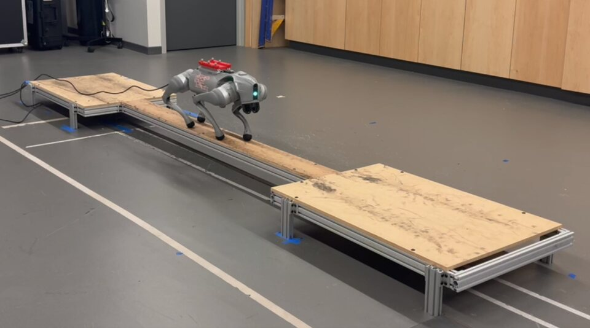

Quad-SDK
900+ GitHub stars · 170+ forks
Quad-SDK is an open-source ROS framework for quadruped locomotion developed at CMU’s Robomechanics Lab. It integrates planning, control, and state estimation, with shared interfaces for simulation and hardware. I contributed to ROS 2 integration for Unitree platforms and a C++ runtime for deploying learned locomotion policies.
Watch on YouTube

Learned Locomotion Through Underbrush
I led Unitree Go2 hardware trials of a learned disentanglement policy in controlled bungee rigs and natural underbrush. I validated per-leg contact estimates decoded from recurrent latents of joint motion and estimated torques against video of entanglement and release.

Duty Factor Predicts Robust Constrained Quadrupedal Locomotion Across Gait Types
Duty factor, the fraction of a stride each foot spends in contact, predicted robustness across gait types and controllers. I developed a learned duty-factor selector for narrow stances and helped validate the trend in 45 Unitree Go2 trials on a 15 cm beam using centroidal MPC without dedicated balance actuation.
Read the paper
Photo or video forthcoming
5-DOF Palletizing Robot
I built a 5-DOF manipulator with a suction end effector and integrated ROS 2 arm control with OpenCV perception for carton pick-and-place.
Photo or video forthcoming
Omnidirectional Palletizing Platform
I prototyped an omnidirectional base for mobile palletizing, integrated LiDAR, cameras, and an IMU, and evaluated vacuum hardware for carton handling.
Photo or video forthcoming
Urban Search and Rescue Robot
I built a ROS 1 mobile manipulator for teleoperated search and rescue in rubble, implementing arm inverse kinematics and object detection via image segmentation and flood fill.